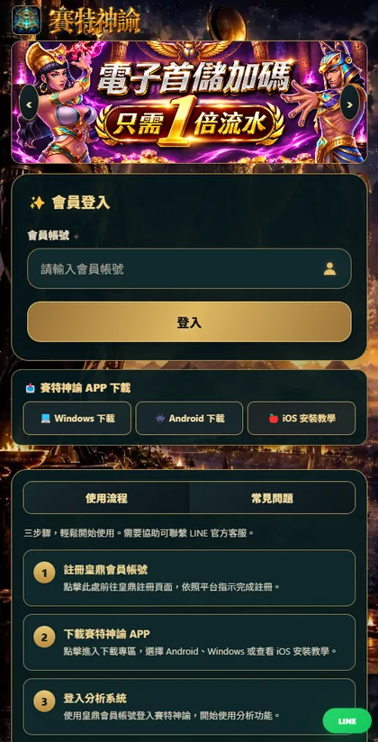
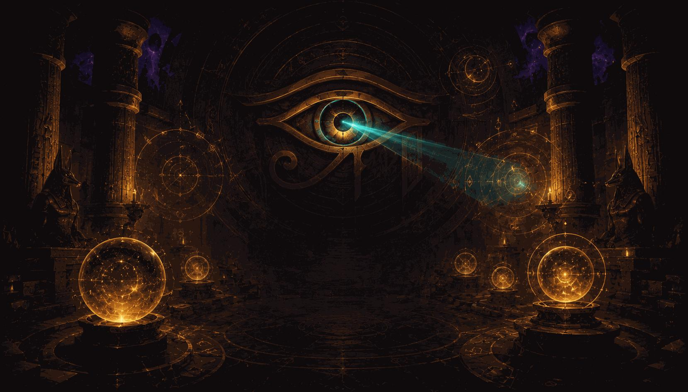

準備帳號
先使用皇鼎會員帳號登入賽特神諭，依登入畫面的提示完成操作。
完成配對
若出現配對碼或裝置設定，照系統引導完成綁定；更換手機或電腦時使用「更換裝置」。
開始選擇遊戲
從遊戲清單選擇目標遊戲。不同遊戲的輔助功能、相容性及測試狀態可能不同。
從新手操作、數據判讀到遊戲基礎與安全觀念，整理成清楚好讀的教學。沒有必勝話術，也不提供未經驗證的掃描成績或勝率。

新手入門掌握會員登入、裝置配對、遊戲選擇的基本流程。
先使用皇鼎會員帳號登入賽特神諭，依登入畫面的提示完成操作。
若出現配對碼或裝置設定，照系統引導完成綁定；更換手機或電腦時使用「更換裝置」。
從遊戲清單選擇目標遊戲。不同遊戲的輔助功能、相容性及測試狀態可能不同。
 全房掃描
全房掃描理解房間列表是如何整理資訊，以及排行的使用限制。
將可讀取的房間狀態集中整理，減少重複逐房查看的操作。
排行只是依系統目前可取得的資訊排序，並非未來中獎機率或獲利保證。
留意資訊更新時間，遇到未更新的房間狀態，應重新掃描並比對遊戲實際畫面。

盤面監測如何閱讀盤面觀察資訊，而不是把訊號當成必出預言。
工具可依支援情況呈現符號、近期紀錄與資訊摘要。
過去出現次數不能保證下一回合出現，獨立隨機事件尤其如此。
先確認遊戲與工具辨識相符，再把資訊當成觀察參考，不當成必勝訊號。
了解加速控制的用途及使用前應檢查的項目。
集中提供支援遊戲的加速操作入口，減少反覆切換控制的步驟。
先確認目前正在遊玩的遊戲及自動轉動設定；操作效果因裝置和遊戲版本而異。
若控制未生效，先停止操作，重新開啟系統並檢查目前版本，不要假設工具已成功執行。
從遊戲介面和功能支援角度認識兩款賽特。
戰神賽特一代與二代是不同版本，應分別選擇對應入口與操作介面。
進入後確認畫面與選擇的遊戲一致，再查看該版本支援的輔助工具。
遊戲版本差異不能推導出某一款必定比較容易獲利；實際規則請以遊戲內說明為準。
支援遊戲一次整理目前官網列出的八款遊戲名稱。
戰神賽特一代、戰神賽特二代、虎小妹、古神巴風特、惡魔血域、孫行者、赤三國、武俠。
在賽特神諭系統的選擇遊戲畫面找到名稱，使用該遊戲入口。
官網列出的遊戲入口不等同於所有進房與分析功能均完成驗證；遇到問題請聯繫客服。
理解常見遊戲統計名詞，避免對數據產生誤解。
RTP（玩家回報率）是長期理論統計概念，不代表個別玩家或短時間回合的實際回報。
波動度描述結果分布的起伏特性，不能用來保證下一輪開獎。
近期連續未出現某符號，不代表下一次一定會出現；小樣本很容易造成錯覺。
遊玩前先設定可承受的支出，避免追逐損失。
僅使用可負擔損失的娛樂預算，不借貸、不挪用生活必要支出。
在開始前定好金額與時間上限，達到即停止，避免因短期輸贏臨時調高額度。
過去虧損不會提高下一局勝率，切勿依此加碼。
不相信必出訊號、保證中獎和來路不明的安裝檔。
聲稱可破解遊戲、提前得知真實隨機結果、保證穩賺等，都應提高警覺。
只使用官方網站提供的連結，勿交出密碼、驗證碼或安裝不明來源軟體。
遇到冒用客服或要求提供敏感資訊時，先透過官方 LINE 核實。
找不到符合的攻略，換個關鍵字試試看。
需要安裝或登入協助？可返回官網，或聯絡官方客服。
查看 APP 下載官方 LINE 客服